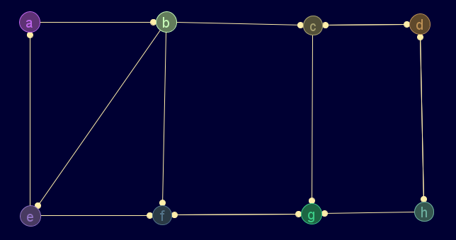

Descripción
Devuelve la lista de predecesores (ascendentes directos) de un nodo
Cadena de entrada
gr_predecesores
Cadena de salida
GRAFO.predecesores
Uso
gr_predecesores(<grafo>,<nodo>)
Ejemplos
gr_nuevo([[0,1,0,0,0,0,0,0],[0,0,1,0,1,1,0,0],[0,0,0,1,0,0,1,0],[0,0,1,0,0,0,0,1],[1,0,0,0,0,1,0,0],[0,0,0,0,0,0,1,0],[0,0,0,0,0,1,0,0],[0,0,0,1,0,0,1,0]],['a','b','c','d','e','f','g','h'],verdadero)
Grafo en JMEScriptGUI con visor de grafos v0.1:

gr_predecesores(gr_nuevo([[0,1,0,0,0,0,0,0],[0,0,1,0,1,1,0,0],[0,0,0,1,0,0,1,0],[0,0,1,0,0,0,0,1],[1,0,0,0,0,1,0,0],[0,0,0,0,0,0,1,0],[0,0,0,0,0,1,0,0],[0,0,0,1,0,0,1,0]],['a','b','c','d','e','f','g','h'],verdadero),'g')
VectorEvaluado: [2,5,7]
Véase también…
gr_sucesores, gr_ascendientes, gr_descendientes
Desde / Última modificación
v0.6.2.0